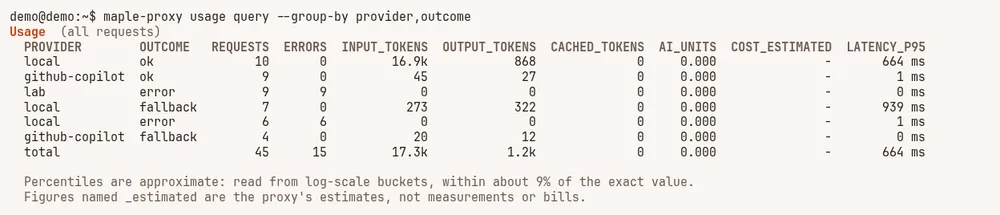
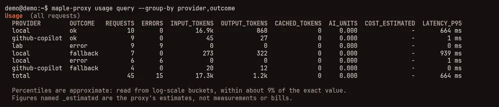
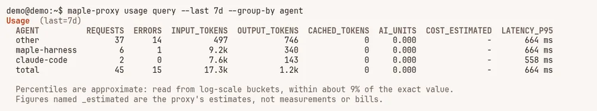
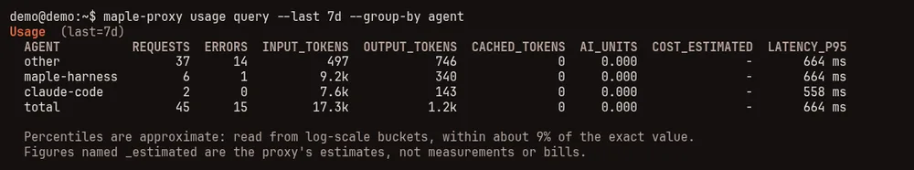
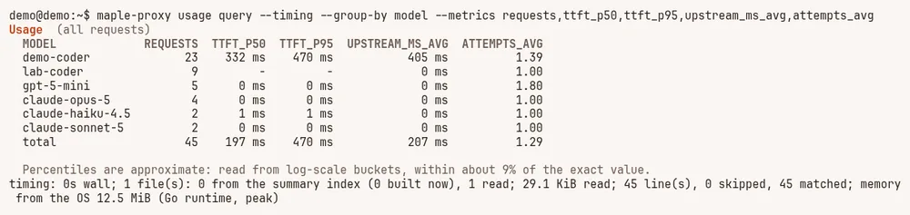
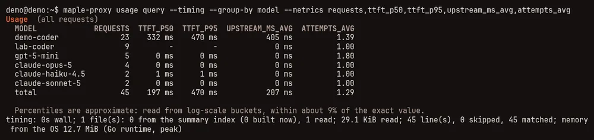
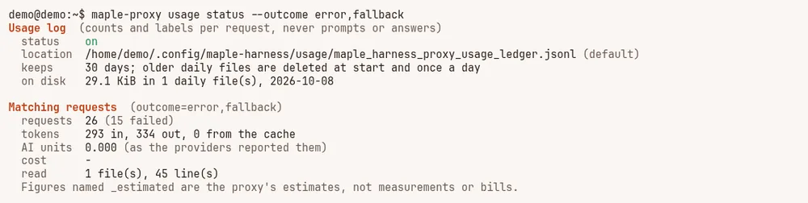
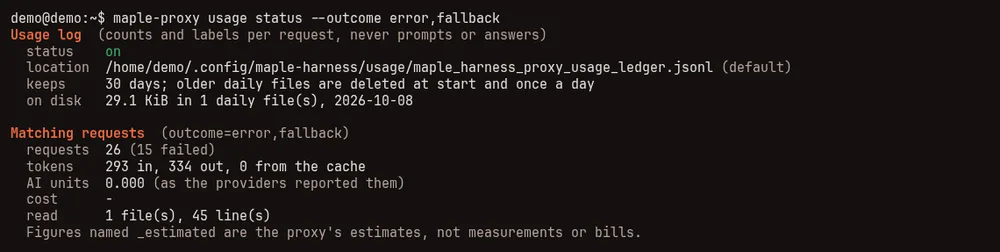
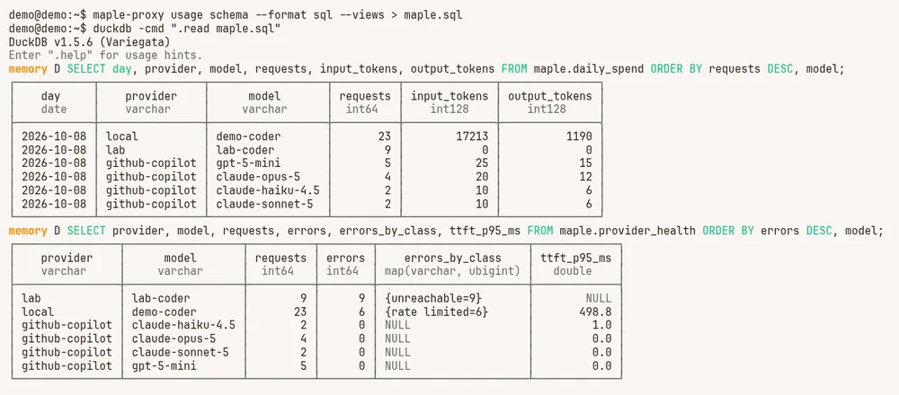
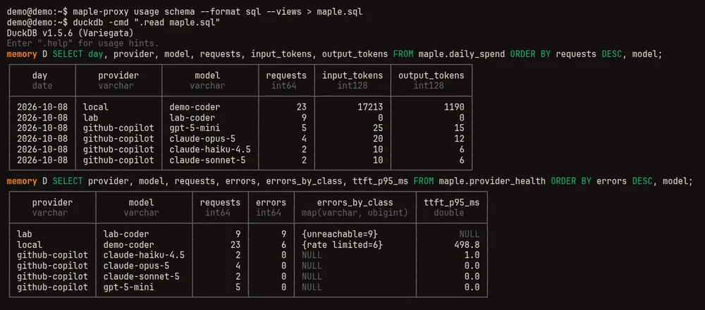

See and filter your usage #
On this page
- In plain words
- What is recorded, and what never is
- Ask a question: usage query
- Export only what you need
- Ready-made views in DuckDB
- Lots of history? Use the DuckDB file or monthly Parquet
- Several pods? Query Postgres
- Analytics with DuckLake
- The events log
- Why the cache missed
- Compare before and after
- How auto did
- The daily summaries
- What it cannot tell you yet
- Related
Every request that goes through the proxy is written to your usage log, on your own disk. This page is the guide to
using it: asking questions with maple-proxy usage query, exporting only the requests you care about, reading it in
DuckDB with ready-made views, and the events log that sits next to it. The full reference (every column, the
schema, Grafana) is in Your usage data. Where the data can live (the daily files, PostgreSQL, a
lake) and which to use is on Your data; tested recipes are in Query your usage.
All of it works without the proxy running: these commands only read files.
In plain words #
- What it is. Every request through the proxy leaves one line in a log on your own disk: which model, how many tokens, how long, how it ended. Never the prompt or the answer.
- Why you want it. Answer your own questions: what did last week cost, which tool used most, how often did a provider fail.
- What to do. On the setup page, Usage and Costs & budgets draw it with filters. In a terminal,
maple-proxy usage query --last 7d --group-by modelasks it directly. The examples follow.
What is recorded, and what never is #
One line per request, with counts and labels only:
- what was asked and who answered: the model the client asked for (
auto, an alias), the provider and model that answered, and whether a fallback stepped in; - how big it was: input, output and cached tokens, and the AI units the provider reported;
- how long it took: the whole request, the time spent waiting on the provider, and, on a streamed answer, the time to the first output;
- how it ended: fine, failed (with a fixed class such as
rate limitedorunreachable), answered by a fallback, answered from the response cache, or a cache-warming request the proxy sent itself; - who sent it: the kind of client (Maple Harness, Claude Code, OpenCode, Hermes or other) and its version, the access token's label, and the session it belongs to;
- estimates, always named
_estimated: a list-price cost for providers set up to give one, and what the proxy's techniques saved and cost.
Never recorded: prompts, answers, files, tool results, keys or tokens. The few fingerprints in the log (for the request, the tool list and the system prompt) are keyed per install, so they tell you that something changed or repeated, and cannot be turned back into the text or matched with another install.
The log is on by default and keeps 90 days. To turn it off, move it or change how long it is kept, see Your usage data.
Ask a question: usage query #
maple-proxy usage query with no options prints the totals for everything in the log. --group-by splits them, and
the filters narrow them down:
# Totals
maple-proxy usage query
# How did requests end, per provider?
maple-proxy usage query --group-by provider,outcome
# Which tools sent what in the last seven days?
maple-proxy usage query --last 7d --group-by agent
# Day by day since a date
maple-proxy usage query --group-by day --since 2026-10-01

lab points at an address where nothing listens, and local refuses more than four requests in three seconds, so its extra requests were rate limited and went to their fallback.Each request has exactly one outcome: ok, error, fallback (a fallback answered it), cached (the response
cache answered, nothing went to a provider) or warming. A request that failed over to another model is one line per
try, so the failed try counts as an error for the first provider and the answer as a fallback for the second.


Filters #
Every filter takes one value or several (comma-separated, or the flag repeated) and matches any of them. Different filters must all match.
| Ask about | Flags |
|---|---|
| A time range | --since, --until (a UTC day such as 2026-10-01, or a time; --until is exclusive), or --last 7d (whole days, from midnight in the proxy's time zone: --last 1d is today, as on the setup page), --last 24h, --last 90m |
| Where it went | --provider-type (anthropic, github-copilot...: every account of that kind), --account (a provider's id or its nickname), --provider (its id), --model, --requested (what the client asked for, such as auto) |
| Who sent it | --agent (maple-harness, claude-code, opencode, hermes, other), --token (an access token's label, local for this machine) |
| One piece of work | --session, --conversation |
| How it went | --outcome, --error-class (such as "rate limited"), --auto-weight (heavy, medium, light) |
- means "not recorded": --session - is every request that did not come with a session. The full list, with
--person and --team, is in Filter your data.
A few questions, as commands:
# Which errors, from which provider, in the last day?
maple-proxy usage query --last 24h --outcome error --group-by provider,error_class
# Where did auto send my requests?
maple-proxy usage query --requested auto --group-by auto_weight,model
# Which sessions used the most today, and then everything one of them cost
maple-proxy usage query --last 24h --group-by session --metrics requests,ai_units
maple-proxy usage query --session <id> --metrics requests,input_tokens,output_tokens,ai_unitsA session's id is a random value the client sends, not the name you gave the session; to put names next to ids, see Spend per conversation and per session.
Choose the figures #
--metrics picks the columns. The default is requests, errors, the four token counts that matter most, AI units, the
list-price estimate and the 95th percentile of latency; maple-proxy usage query --help lists them all. Some useful
ones:
| Metric | What it is |
|---|---|
error_rate, fallbacks, cached_responses | How often things went wrong, or were rescued, or never reached a provider |
hit_rate | The share of input tokens read from the provider's prompt cache, over requests that report it |
latency_p50, latency_p95 | How long whole requests took |
ttft_p50, ttft_p95 | Time to the first output, streamed requests only |
upstream_ms_avg | Time spent waiting on the provider, apart from the proxy's own work |
attempts_avg | How many providers were tried per answer: above 1 means fallbacks were working |
anything ending in _estimated | The proxy's estimates of cost and savings, never a bill |
Percentiles are approximate (within about 9% of the exact value), and the answer says so.
Table, JSON or CSV #
--format table (the default) is for reading. --format json gives the same groups and totals with a meta part
that says what was read, for a script; --format csv is for a spreadsheet:
maple-proxy usage query --group-by error_class --metrics requests --format csverror_class,requests
-,30
unreachable,9
rate limited,6See what it read #
--timing adds a line after the answer: how long it took, how many daily files it read, how many came from the daily
summaries (see below), how much it read, and how many lines matched. It goes to standard error,
so it never ends up in a file you redirect the answer into.


lab-coder never answered, so it has no time to first token.Notes on every answer #
Every answer ends with notes on what its figures cannot show: that percentiles are approximate, that figures named
_estimated are estimates, that some matching lines were written before a column existed (and so have no time to first
token, for example), or that a line could not be read. Read them before you compare two periods.
Export only what you need #
usage export takes the same filters, so the file holds only the matching requests:
maple-proxy usage export --format csv --out errors.csv --outcome error
maple-proxy usage export --format parquet --out week.parquet --last 7d
maple-proxy usage export --format csv --out copilot.csv --provider github-copilot --since 2026-10-01Exports read and write a day at a time, so a long range does not have to fit in memory. Without a filter, an export is exactly what it was before this release. Formats and columns: Export to CSV or Parquet.
usage status takes them too, and adds the matching requests' totals under the usual summary of where the log is and
how much disk it takes:


usage status with a filter: the log's place and size, then the totals of the requests that failed or were answered by a fallback.Ready-made views in DuckDB #
For your own questions in SQL, DuckDB reads the log directly. --views adds a set of named
views, in a schema of their own called maple, so they never replace a view of yours:
maple-proxy usage schema --format sql --views > maple.sql
duckdb -cmd ".read maple.sql"| View | One row per | Good for |
|---|---|---|
maple.requests | request | Every column, plus the UTC day and the outcome |
maple.daily_spend | day, provider, model (and person and team) | Requests, tokens, AI units and the list-price estimate per day |
maple.sessions | session | When a session started and ended, its models, AI units and prompt-cache hit rate |
maple.provider_health | provider, model, hour | Error rates by class, and percentiles of latency, time on the provider and time to first token |
maple.people | person and team | Requests, AI units and the list-price estimate per person, with unattributed for requests no person was recorded for |
maple.alerts, maple.events | event | The events log |


A few queries to start from:
-- Spend by day and provider.
SELECT day, provider, sum(requests) AS requests, sum(ai_units) AS ai_units
FROM maple.daily_spend
GROUP BY ALL
ORDER BY day, provider;
-- Hours when a provider failed more than one request in twenty.
SELECT provider, model, hour, requests, errors, errors_by_class
FROM maple.provider_health
WHERE error_rate > 0.05
ORDER BY hour DESC;
-- The sessions that used the most AI units.
SELECT session, first_at, last_at, requests, models, ai_units
FROM maple.sessions
ORDER BY ai_units DESC
LIMIT 10;Run usage schema --views again after the first events file appears, so maple.events and maple.alerts find it.
More queries, and what each view's columns mean: Named views.
Lots of history? Use the DuckDB file or monthly Parquet #
The views above read one daily file per day. Over months of history, or on a hub that keeps what the proxies below it send up, that is many files. Pack them instead:
maple-proxy usage compact # one Parquet file per month, in analytics/ next to the daily files
maple-proxy usage schema --format sql --views --source parquet-monthly > maple.sql
maple-proxy usage duckdb # or everything in one file, refreshed each time you run it
duckdb ~/.config/maple-harness/usage/analytics/maple_usage.duckdbBoth hold exactly what the daily files hold, and both follow the cleanup. Set Analytics files on the Usage data
card to have the proxy refresh them once a day. Details, and what to do about Too many open files:
Lots of history?
Several pods? Query Postgres #
In central mode the usage of every replica is in PostgreSQL. The same views over it, the connection string read from an environment variable when you query:
maple-proxy usage schema --format sql --views --source postgres --dsn-env MAPLE_PG_DSN > maple-pg.sql
duckdb -cmd ".read maple-pg.sql"See Several pods?.
Analytics with DuckLake #
A DuckLake keeps your usage history as Parquet data files and a catalog, with snapshots
you can read as they were, long after the daily files' retention has removed them. maple-proxy usage lake makes one
and keeps it current with your own duckdb command line; the proxy never installs or downloads DuckDB.
- On one machine, the lake is filled from the daily files (
maple-proxy usage lake, or Analytics files set tolakefor a daily refresh). - For a team in central mode, a scheduled job moves what PostgreSQL stored into a lake whose catalog is a schema
of the same PostgreSQL (
--source postgres). - One lake, one source. A lake whose catalog is in PostgreSQL needs
--sourcesaid every time, and a lake filled from one source refuses the other unless you pass--allow-mixed-sources.
Where to go next:
- The Maple data lake: setting it up on one machine or for a team, the CronJobs, credentials, maintenance, snapshots and troubleshooting.
- Your data: the daily files, PostgreSQL and the lake side by side, and which one to use.
- Query your usage: questions to ask the lake in DuckDB.
The events log #
Things that happen that are not requests go to their own daily files, events-YYYY-MM-DD.jsonl, in the same folder
as the usage log. They follow the usage log: on when it is on, off when it is off, and kept for the same number of
days. The usage files still hold requests only, so counting their lines still counts requests.
It records settings changes, provider health changes, spend alerts and the model
switches Maple Harness reports. A save on the setup page writes one line per setting that changed, naming the
setting and never its value, except for numbers, switches and modes. Each start of the proxy writes a fingerprint
of the whole configuration, so a change made to config.yaml while the proxy was stopped shows up at the next start
as changed-outside. Here are the lines one demo session wrote, setting Keep to 30 days on the Usage data card:
{"at":"2026-10-08T21:34:04.383141104Z","kind":"config.change","subject":"config","level":"info","code":"start","value":"6a7e318685d7fd72.8ed9f05c","detail":"proxy start"}
{"at":"2026-10-08T21:34:49.517089449Z","kind":"config.change","subject":"server.usage_retention_days","level":"info","code":"added","value":"30","detail":"setup page"}
{"at":"2026-10-08T21:34:49.517089449Z","kind":"config.change","subject":"config","level":"info","code":"saved","value":"8ff92be9367e28e7.8ed9f05c","detail":"setup page"}A key, a token, an address, a path or a model name is never written. The fields are described in
The events log; in DuckDB, maple.events reads them:
SELECT "at", subject AS setting, code, value
FROM maple.events
WHERE kind = 'config.change'
ORDER BY "at" DESC;Why the cache missed #
When a provider's prompt cache misses, the usage log says why in cache_reason, and since this release one level
finer in cache_detail. maple-proxy usage cache-misses sums it up: how often the cache missed, by client, client
version and person, the most common reasons, and an estimated cost of the misses. It takes the same filters as
usage query:
maple-proxy usage cache-misses --last 7d
maple-proxy usage cache-misses --agent claude-code --format jsonThe estimate uses prices seen on your own requests (a token read from the cache, and one that was not); misses on a model whose prices have not been seen are counted, not priced. It is not a bill, and the advice below is advice, not a promised saving.
cache_detail | What happened | What you can do |
|---|---|---|
tools-added:<n>, tools-removed:<n>, tools-changed | The tool list changed between turns | Keep the same tools for the whole conversation: turn tools or MCP servers on or off between conversations, not during one |
tools-reordered | The same tools, in another order | A client that sends its tools in the same order keeps the cache; the prefix stabiliser does this for clients that do not |
system-first-block | The start of the system prompt changed | Move anything that changes every turn (a date, a time, a counter) to the end, or out of the system prompt |
system-later-block | A later part of the system prompt changed | Put the parts that change after the parts that stay the same |
cache-marks-moved | The same text, with the client's cache marks in other places | Nothing on your side: it is the client's choice, and a client update may change it |
provider-side | Nothing at the start of the request changed and the cache was still young | Nothing on your side: the provider did not use its cache |
expired-idle:<time> | The conversation sat idle that long, past the cache's life | Expected after a break; cache_warming can keep it for Anthropic |
A new conversation, a switch to another model, and a prompt shorter than the provider caches are reasons on their
own, with no detail. Lines written before this release have no cache_detail; their cache_reason is counted.
Compare before and after #
maple-proxy usage compare sets two windows of your usage side by side, per request, to see what changed after you
changed a setting:
maple-proxy usage compare --before 2026-10-01..2026-10-07 --after 2026-10-08..2026-10-14
maple-proxy usage compare --around context_trim # a week each side of its last change
maple-proxy usage compare --around 2026-10-08T12:00:00Z --window 3d --agent maple-harnessEvery answer says measured on your traffic, observational, not a controlled test, and means it. Two weeks differ in more than one setting: the work, the provider's caching and prices, the models, the time of day. What the command does about the kind of work: it groups requests by client, the model asked for, the length of the conversation and the number of tools, compares each group with the same group in the other window, and weighs the groups the same way on both sides. A week of long conversations is then not read as a setting making requests dearer. The plain difference, without that, is shown next to it so you can see how much the mix of work alone moved.
- The range comes from resampling whole sessions (or conversations), since the requests of one session are not independent. A range that includes no change means the windows cannot tell the two apart.
- It refuses when either window has fewer than 200 requests, or when too few requests in a window are of kinds
seen in the other.
--forceshows the figures anyway, with the reasons as warnings. - It warns when the models answering changed between the windows, or when part of a window had no match.
--arounda setting uses the latest change of that setting in the events log, so it works for changes made since the events log began. With a time instead, any change you know of works.- Cache-warming requests and answers from the response cache are left out.
It cannot say why something changed. For a causal answer, run the same tasks with and without the setting, paired and
repeated, with maple-harness bench (see Measure with bench).
How auto did #
maple-proxy usage auto-report says how requests routed by auto turned out, per weight and model: how often they
failed, needed a fallback, were sent again within a minute, or were followed by you switching model (Maple Harness
tells the proxy when you switch with /model; other clients do not), and how long their conversations ran.
maple-proxy usage auto-report # the last 7 days
maple-proxy usage auto-report --last 30d --include-direct --format jsonIt is measured and observational: it shows what happened after each choice, not what another model would have done,
and heavier work fails and is retried more whichever model answers it. It changes nothing about how auto chooses.
The daily summaries #
To answer quickly over months of data, usage query keeps a summary of each finished UTC day in your user cache
folder: ~/.cache/maple-harness/usage-index/ on Linux (or under $XDG_CACHE_HOME), ~/Library/Caches/maple-harness/usage-index/
on macOS. They are private to you, and they are never put next to the usage log, so nothing that reads that folder
sees them.
- They hold the same counts and labels as the usage log, nothing more.
- Today is always read from its file; only finished days are summarised.
- A day whose file changed is summarised again by itself, and a day whose file was deleted (by Keep or
usage prune) loses its summary too. - You can delete the folder at any time. Nothing is lost: the next question rebuilds what it needs from the usage log.
--no-indexanswers from the files alone and writes nothing.
What it cannot tell you yet #
- The newer columns start with this release. Time to first token, time on the provider, the error class, the routing reason and the client's version are recorded from schema version 4 on. Lines written by earlier releases have them empty (NULL), never 0, and an answer's notes say how many matching lines are like that.
- People and teams start when you set them up.
personandteamare recorded once people are set up; earlier requests show asunattributed(-in JSON and CSV answers; see Requests with no person). - The events log records settings changes, provider health, alerts, and the model switches Maple Harness reports.
- Time to first token is for streamed answers only. An answer that was not streamed has none.
- An answer from the response cache shows no attempts: it went to no provider.
- The
daycolumn is a UTC day. "Today", the page's 1/7/30-day buttons andusage query --last Ndcount from the proxy's local midnight; a range given as dates (--since 2026-10-14) is in UTC days. To match "today" here, filter on the time column from your local midnight; see Cost and savings. - Estimates are estimates. Anything named
_estimated, and the list-price cost, is the proxy's estimate and not a bill. AI units are what the provider reported.
Related #
Your usage data · Proxy settings · What /cost tells you · See and reduce what a task costs · Your data · Query your usage · The Maple data lake